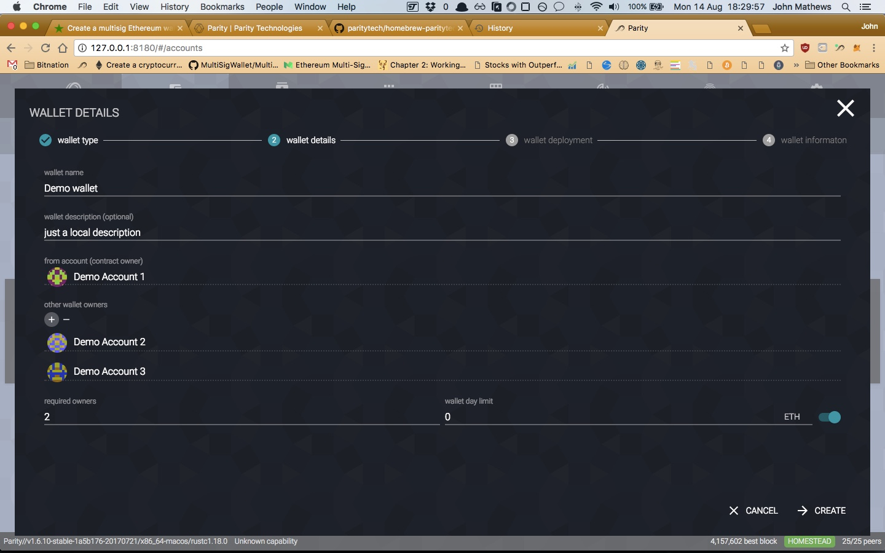

Set up and use Parity to create and manage multi-signature Ethereum wallets, edit the wallet’s settings and view pending and past transactions
I recently set up a multi-sig Ethereum wallet and I couldn’t find clear instructions. Here they are, I hope these instructions are useful for someone looking to get started.
You’ll need a way to interact with the Ethereum blockchain in order to deploy a wallet. There are several apps that you can use. I’ve used Parity because I found it simple and quick.
Ethereum Wallets
Wallets are a type of contract and there are two types of wallet, the Multi-Sig wallet and the Watch wallet. An Ethereum account is required to communicate with a contract so if you want a multi-sig wallet with 3 signatories (for example) then you will need to have set up at least 1 of those 3 Ethereum accounts before creating the wallet.
Parity
From their website:
Integrated directly into your Web browser, Parity is the fastest and most secure way of interacting with the Ethereum network.
You can do a bunch of stuff with Parity including mining Ether, manage accounts, interact with different dapps, send/receive from different accounts, and set up contracts. On the accounts tab, you can quickly set up Multi-Signature wallets. If you use the Chrome plugin you will also get handy notifications when transactions are confirmed or contracts deployed.
Download and open Parity
For MacOS you can download and install Parity by visiting the Parity site and downloading the installer, or from the terminal using curl or Homebrew.
Simple option
$ bash <(curl https://get.parity.io -kL)
Homebrew
Detailed instructions are here.
brew tap paritytech/paritytech
brew install parity --stable
If you used the installer, then you open Parity opening the app and then using the logo in the menubar.
If you used Brew, then start Parity with the following command
parity
and then go to the following address in your browser:
http://127.0.0.1:8180/
You should now see something similar to this:
Add or create accounts
Select the Accounts tab from the top of the page and then select “+ Account”. Either create new accounts or import them using your preferred method. You don’t need to import all the accounts that will be part of the multi-sig wallet, but you will need to import or create the account that will own the wallet you are about to create. This account will need to have a large enough Ether balance to pay the transaction costs to deploy the multi-sig wallet onto the Blockchain. The costs are tiny, but they are greater than zero.
Create the multi-sig wallet

-
Once you’ve either created or imported the account which will deploy the wallet, select “+ Wallet” from the accounts tab and choose “Multi-Sig wallet”. Click next.
-
Enter a name for the wallet, if you want you can add a local description.
-
The “From account” will be the contract owner and this account will
- Be one of the signatories.
- Need to have enough Ether to pay for the execution of the contract on the blockchain.
-
Click the “+” button under “Other wallet owners” to add the address of the other signatory accounts. You’ll need to add one line for each signatory and these accounts will also own the wallet once it is deployed.
-
In the “required owners” section, specify how many accounts will need to approve a transaction that is above the daily transaction limit.
-
Use the “wallet day limit” to set how much Ether can be spent by each account per day without needing another account to approve the transaction. Set an amount of 0 if you want all transactions to require approval, or turn the option off using the slider to the right (which just specifies a huge number).
-
Click “next” and you’ll be shown a pop-up window to approve the creation of the wallet. You will need to enter the password of the account which is creating the wallet, and once you click “Confirm request” the funds in the creators accounts will be used to deploy the contract on chain and create the multi-sig wallet.
Adding an existing multi-sig wallet
Once your wallet is created and deployed, you’ll need to add it to other parity clients so that the other signatories can make or confirm transactions, and view the wallets balance. This is done by adding a watch wallet.
Process: Accounts tab > + Wallet > Watch wallet > enter the address of the multi-sig wallet.
The other signatories will now be able to view the wallet’s balance, get notifications about pending confirmations, and be able to make and monitor transactions.
Managing a multi-sig wallet
-
Anyone can put funds into the wallet, just like a normal account. Just send Ether to the wallet’s address.
-
At the top of the page you click “Edit” to change the local name and description of the wallet.
-
“Settings” allows you add or remove owners (signatories) of the wallet and change the required number of approvals and the wallet day limit. If you change these settings then the changes will need to be executed on the blockchain and the account requesting the change will therefore need to pay the required funds. Depending on the settings being changed, other accounts will need to approve the changes before they are implemented.
-
“Forget” will remove the multi-sig wallet from your accounts tab.
Moving funds out of a multi-sig wallet
-
Click on “Transfer” in the wallet management window (pictured above) to begin withdrawing funds from the wallet.
-
Select the token you want to transfer - Ethereum is the only default option.
- “Sender address” - specify which account wants to withdraw the funds from the multi-sig wallet.
- “Recipient address” - specify which account will receive the funds.
- “Amount to transfer” - specify how much you want to transfer. If the amount is greater than the remaining daily limit you will get a warning bar telling you the transaction will require confirmation from other wallet owners.
- If you want to specify the maximum transaction fee (a payment with a lower fee will be confirmed more slowly than usual) tick the “advanced sending options” box.
- Clicking “send” will bring you to the confirmation stage where you can enter the password for the account which is requesting the transfer.
- If approval from other wallet owners is required and they are also using Parity, then they can see that their approval is required in two ways:
- The signer tab will show there is a pending request.
- The wallet management window (accessed from the accounts tab) has a “pending transactions” section where any confirmation requests will be shown.